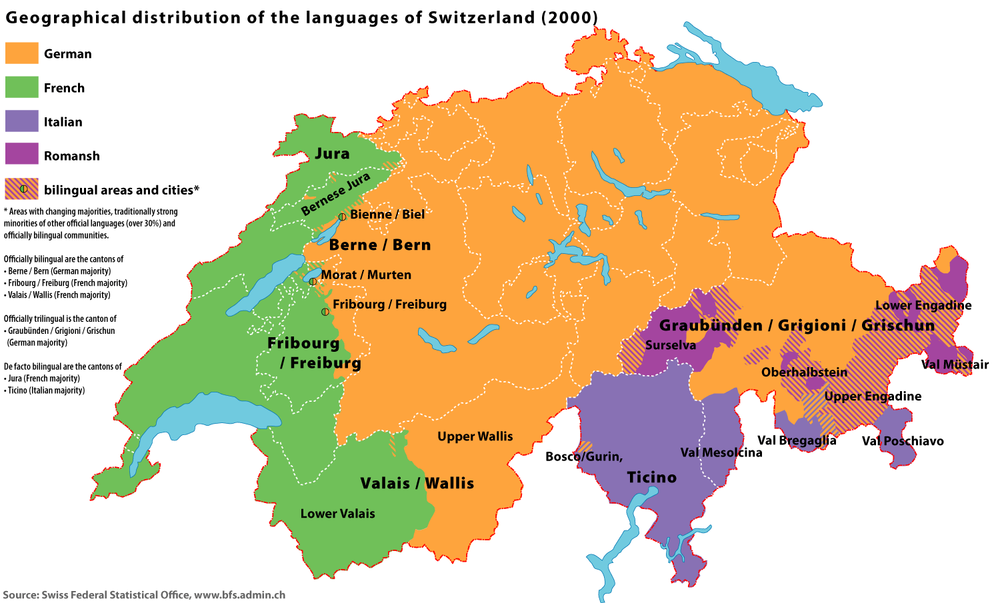
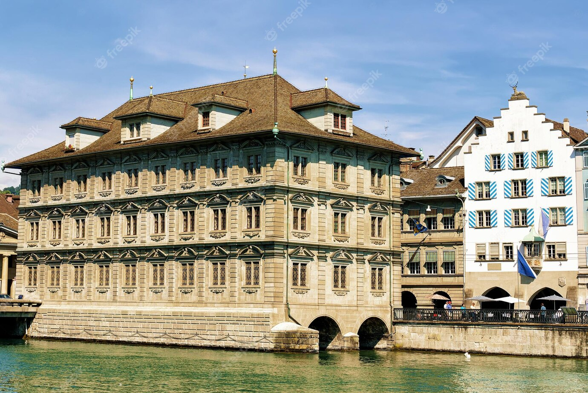
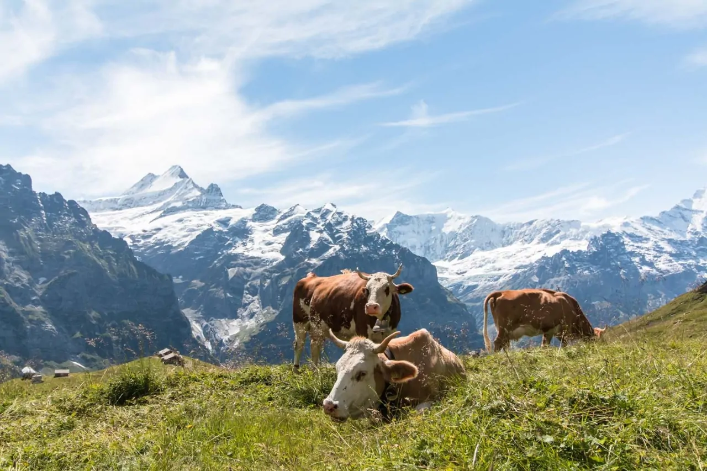

Na suíça são faladas impressionantes quatro idiomas, sendo eles: Romanche, Alemão, Francês e Italiano.
|

Foi também na suíça que o físico alemão Albert Einsten formulou sua famosa téoria da relatividade.
|

O Presidente da Confederação Helvética é eleito por um ano pela Assembleia Federal Suíça que é formada pela reunião do Conselho Nacional e pelo Conselho dos Estados.
|

É possível alugar vacas. Isso mesmo, durante o período de aluguel você tem direito de consumir todo o queijo produzido com o leite dela.
|